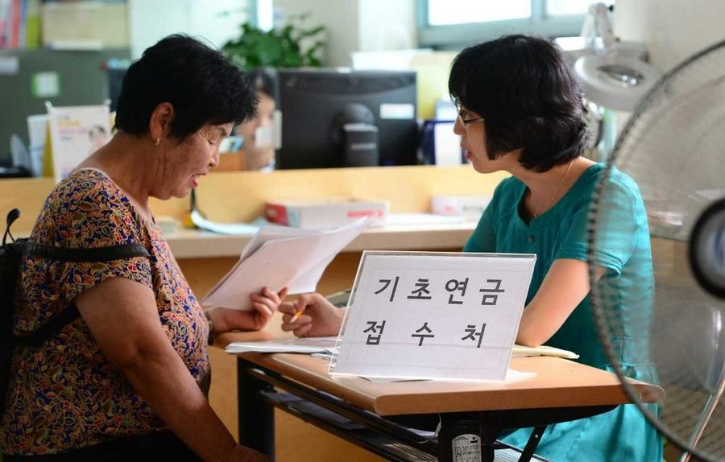
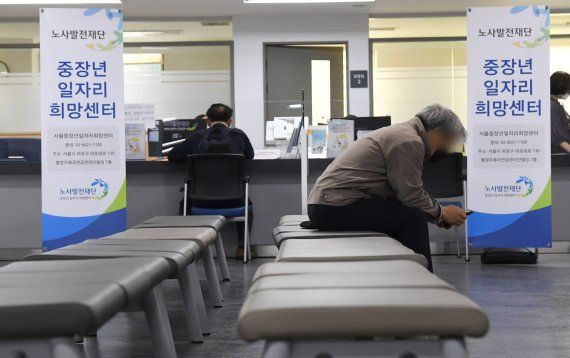
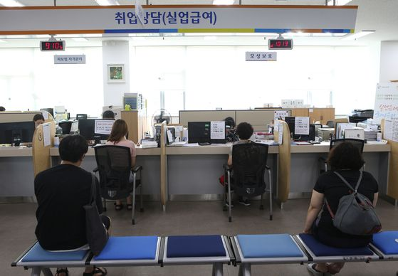
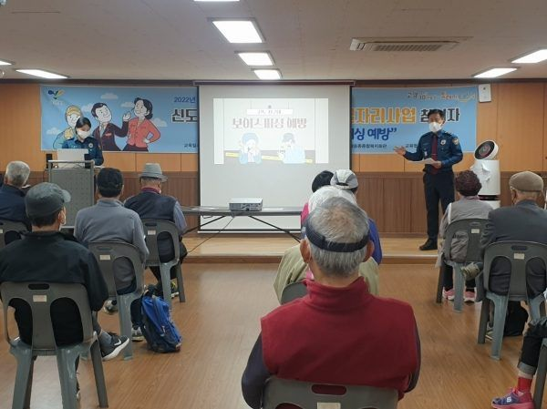
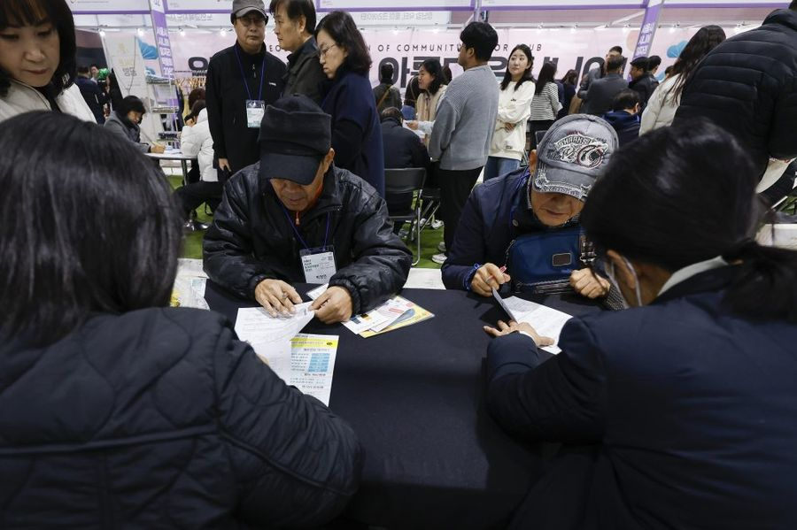
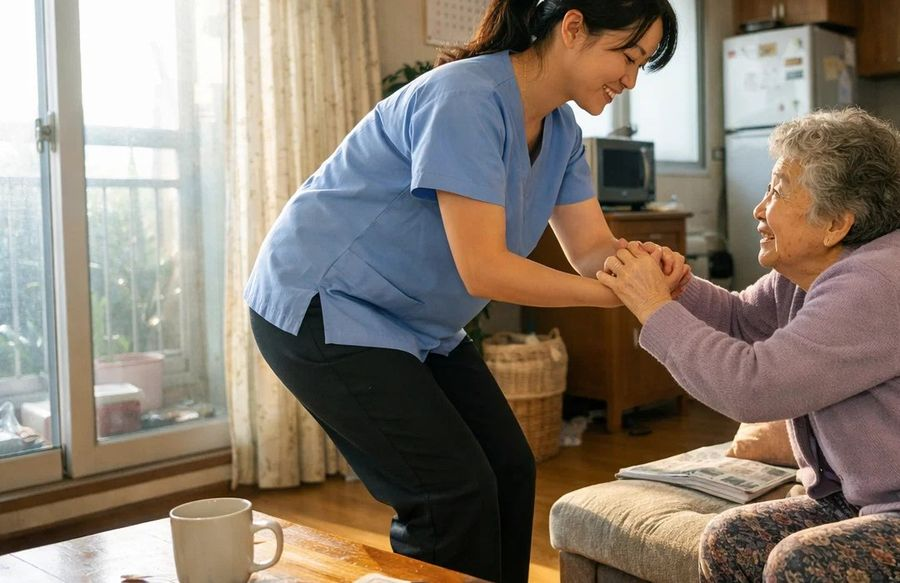

경기 · 돌봄·요양D-37
[ 퇴계원읍 ] 4등급 할머님 재가요양보호사 구인
주식회사아가세(AGaSECO.,LTD)
최근 수집
2026년 10월 27일 수집분 가운데 마감이 남은 공고입니다. 지원은 고용24 원본 공고에서 합니다.
주식회사아가세(AGaSECO.,LTD)
성화개발（주）
부경공영주식회사
주식회사 제이앤피21
신동아아파트입주자대표회의
에녹요양협동조합주야간보호센터
마감 임박
7일 안에 마감되는 공고 275건 가운데 직종별로 골라 봤습니다.
고은손재가노인복지센터
(주)두원에이앤씨
디티에스코리아주식회사
주식회사 비씨에스
주식회사 트리오엔지니어링
주식회사 글로벌그라운드
일자리 전체
직종·지역·검색어로 좁혀 보세요. 마감일이 지난 공고는 목록에서 뺐습니다.
구직 가이드
연금·지원금부터 이력서·면접, 직종 준비까지 — 주제별로 모은 글 19편 가운데 자주 찾는 여섯 편입니다.

복지·지원금일해서 번 돈은 전부를 세지 않고 공제가 적용돼, 연금이 그대로인 경우도 많습니다. 확인 창구는 보건복지상담센터 129입니다.
글 읽기
복지·지원금나이 상한이 없어 60·70대도 참여할 수 있는 제도입니다. 수당을 받는 1유형과 훈련·알선 중심의 2유형을 정리했습니다.
글 읽기
복지·지원금받을 수 있는 기본 조건 세 가지와, 이직확인서 확인부터 고용24 구직 등록까지 신청 순서를 단계별로 안내합니다.
글 읽기
지원 준비먼저 돈을 내라는 곳, 통장을 보내라는 곳은 거르세요. 위험 신호 6가지와 신고 방법을 정리했습니다.
글 읽기
지원 준비'건강은 어떠세요?' 같은 단골 질문 네 가지. 과장 없이 구체적으로 답하는 요령을 알려드립니다.
글 읽기
직종 가이드공고 1,100건. 자격증, 일하는 방식, 몸이 힘든 정도를 알려드립니다.
글 읽기혼자 고민하지 마세요
노인일자리 상담센터(한국노인인력개발원 운영)에서 경력과 몸 상태를 듣고 맞는 일자리를 함께 찾아 드립니다. 평일 09:00–18:00.
이 사이트의 전화번호가 아닙니다. 일자리를 미끼로 돈을 요구받으면 경찰 112 · 고용노동부 1350으로 신고하세요.
무료 상담 · 대리 접수